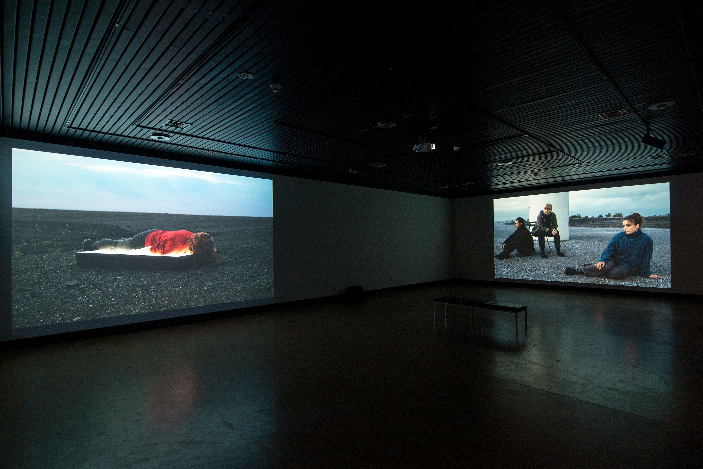
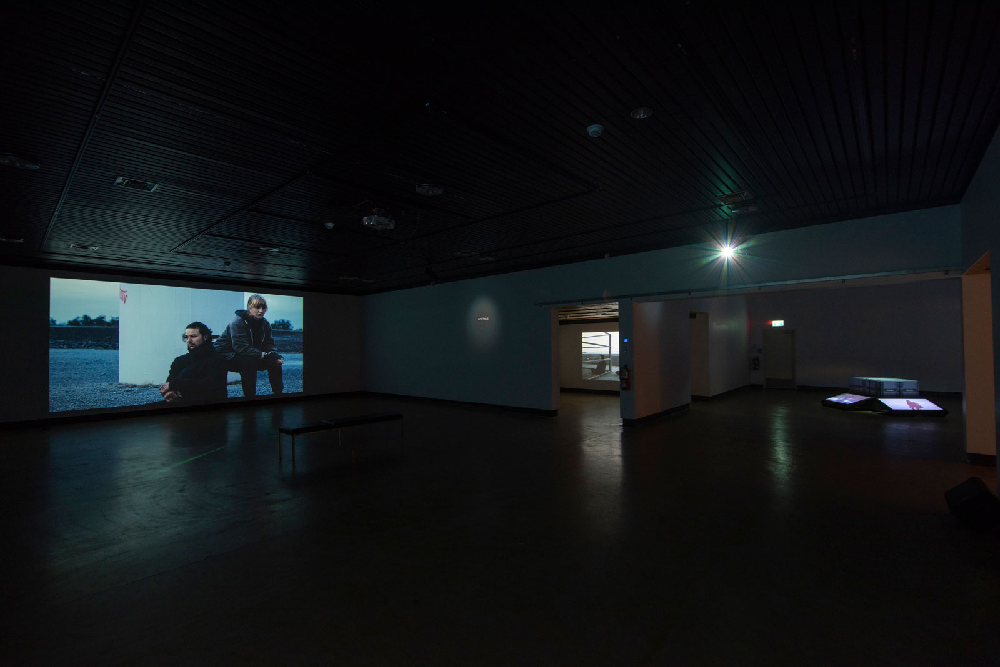
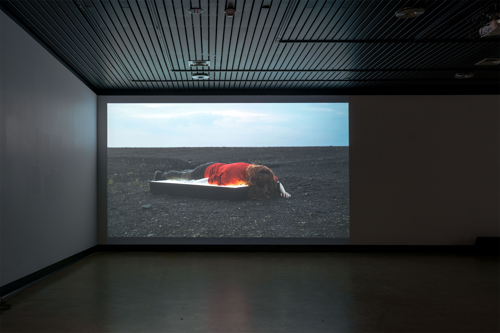
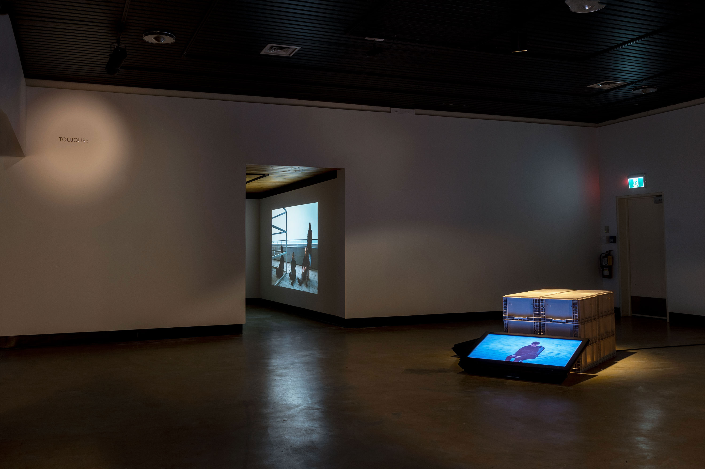

Jessica Arseneau


Video still frames
Dawns, 2021-2022
Multichannel video
25:19 min.
Sound stereo
Dawns takes us to a time when sleep is disrupted and insomnia becomes a collective condition. Captured before sunrise, with non-actors in a variety of outdoor environments, the multi-channel work consists of a series of continuous shots and long takes. The slow cinematographic images are reminiscent of tableau vivants where people, in groups or alone, find themselves in an urban environment or the transformed wasteland of a former industrial area. Exhaustion is conveyed by the bodies’ postures and their near immobility, composing at the same time an atmospheric landscape of fragility and endurance at the limit of the perceptible. While the videos look still images, they allow us to see the slow, luminous transition of night into day.
Solo exhibition Surrounding Uncaring Skies, Galerie d'art Louise-et-Reuben-Cohen, Moncton, in which Dawns was installed:




Photo credits: Mathieu Léger

 <
<



Views at Galerie d'art Louise-et-Reuben-Cohen, Moncton
photo credits: Jessica Arseneau
DAWNS: exhibition views & video excerpts from Jessica Arseneau on Vimeo.
Camera: Kathrin Grzeschniok
Featuring: Henrik Beeke, Leonie Böhmer, Katharina Geling, Danijel Brekalo, Fabio Gorchs, Kathrin Grzeschniok, Ama Gyaako Kagya Agyemang, Lorenza Elisabeth Kaib, Aljoscha Lahner, Camilla Mücksch, Scherin Rajakunaran, Hannah Stratmann, Philipp Daniel Unger, Anna Wehling
Special thanks: Ralf D’Atri, Alisha Raissa Danscher, Jan Ehlen, Einar Fehrholz, Vittoria Lenz, Vanessa Nica Mueller, Thomas Szabo, Makroscope Mülheim
We acknowledge the support of the Canada Council for the Arts. This project was created as part of the Zu Gast bei Urbane Künste Ruhr zu Gast bei der Silent University Ruhr residency program, a collaboration between Urbane Künste Ruhr and Ringlokschuppen Ruhr.


Exhibition view, program of Rencontres Internationales Paris/Berlin at the Auditorium of Haus der Kulturen der Welt, Berlin